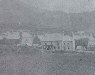
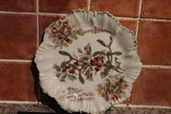

Compton House.
(The Eifl Workmen Society Co-operative)
Compton House was the first cooperative shop (y Stôr) opened by the Eifl Workmen Society, and the quarrymen worked for free here. Two or three manned the counters and one kept the accounts in the big ledger, before entering it into the customer’s book. The dividend paid was an attractive proposition. In 1950, when Lena Pritchard worked here, it employed two people, and Harold James was the manager. The Stôr moved to where Miss Jones’ old shop used to be, before closing altogether in October 1969.
This is what Ellen Evans, Alpha remembers about Compton House:
Y Stôr, Compton House.
Yr Eifl Workmen Society.
The shop, of course, only used to be open in the evenings, after the workers returned from the quarry. The workers themselves used to take turns selling all kinds of goods and clothes. The Stôr was a great success in Llithfaen and did the world of good in helping make ends meet. Every quarter the difi was paid – a sum for every pound spent. I remember the dividend being as much as a crown to the pound, and this would be a great help to the bigger families.
Only the most knowledgeable amongst us were invited to join the committee. But once, one very illiterate person managed to join the committee. The committee was busy making an order for a customer, and the matter of ordering tea came up. The poor man proposed that they order a ton!!
It all stared in Trefor, and from there the idea came to Llithfaen over discussions in the quarrymen’s mess. William Griffith, Bryn Dirwest, was the first to mention the idea. As far ar we know, there are no surviving records, but some villagers still remember that the Stôr located opposite the schoolyard in Compton House. After a hard day’s work, the quarrymen were volunteer shopkeepers in the evening. Two or three manned the counters, one would be by the desk, in charge of the ledger before recording a purchase in the customer’s book. Ioan Mai Evans, Alpha, remembers that the goods came from Caernarfon by traction before the days of Morris and Jones. Payday would be on a Friday or Saturday night, and the Stôr would be bustling until gone eleven o’clock at night. The highlight of the year would come every quarter, when the difi, or dividend was paid. Ioan Mai remembers the villagers’ elation sometime in the 1920s, because the dividend would be half a crown to the pound. Many remember carrying the gallon jar of paraffin on a Saturday night from the paraffin hut that opened at 5 o’clock. The hut was located opposite William the cobbler’s workshop, a bit further on than the Stôr.
Census Facts:

A comemorative Christmas plate from ther Eifl Co-operative Store.